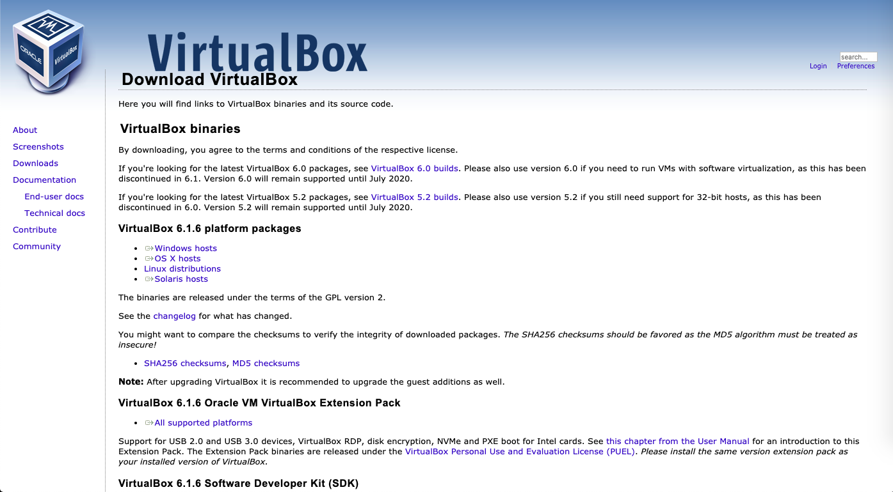
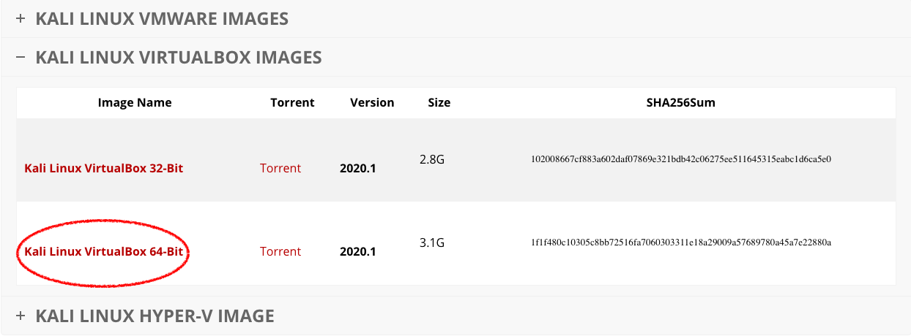
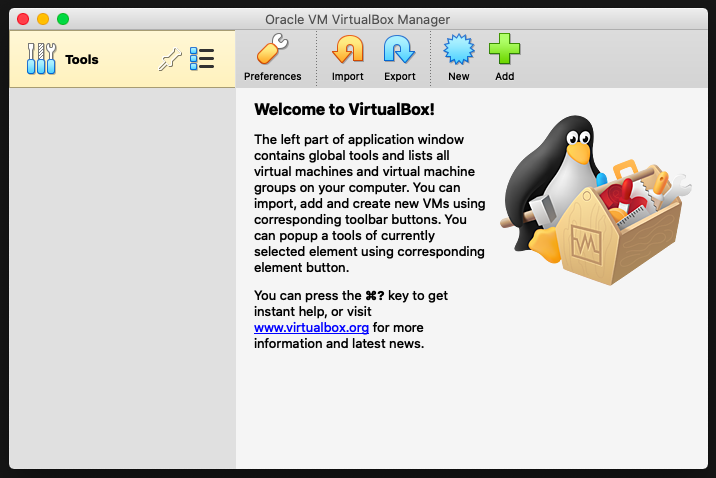
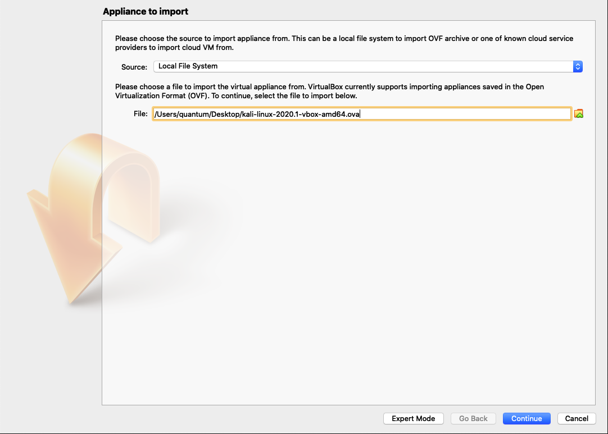
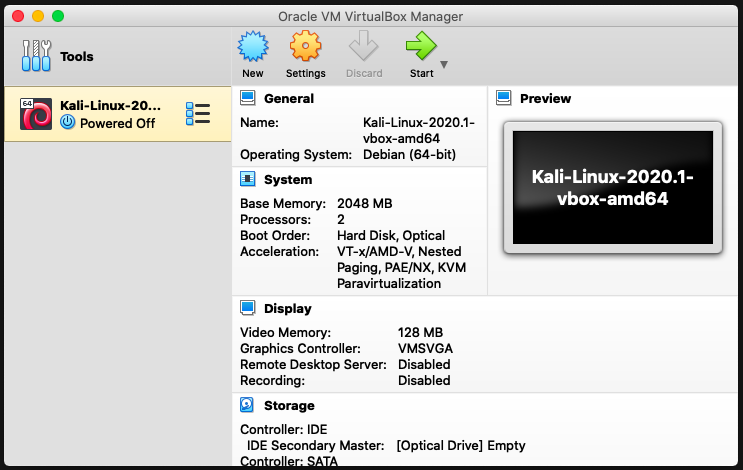
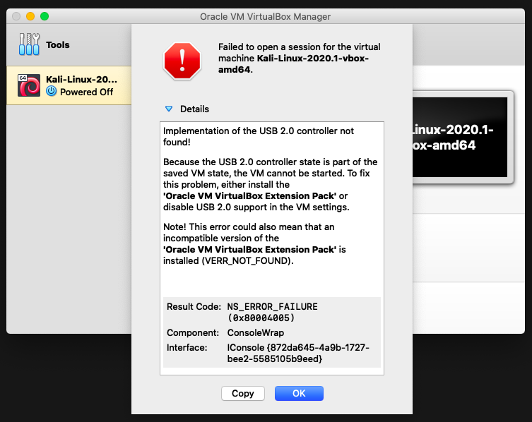
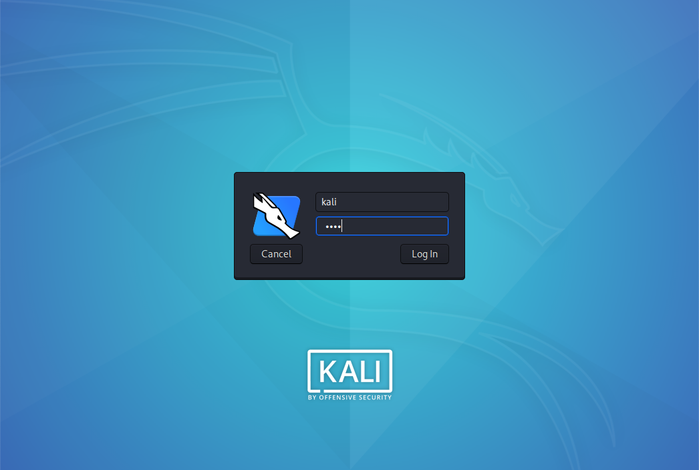
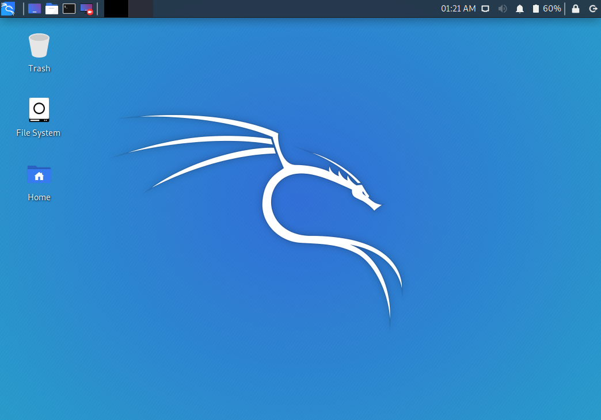
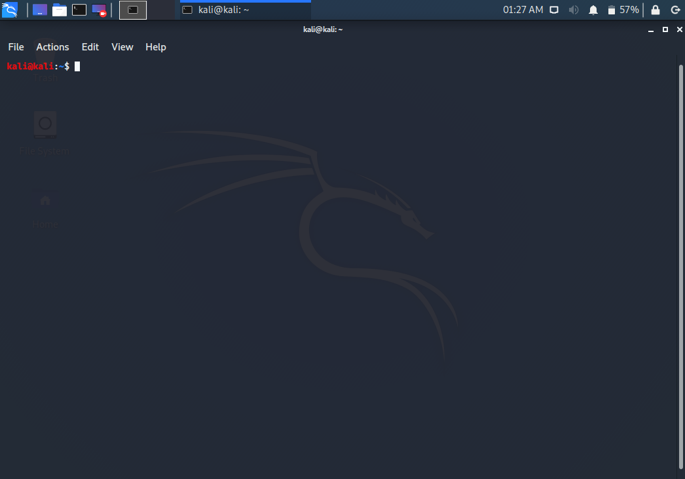
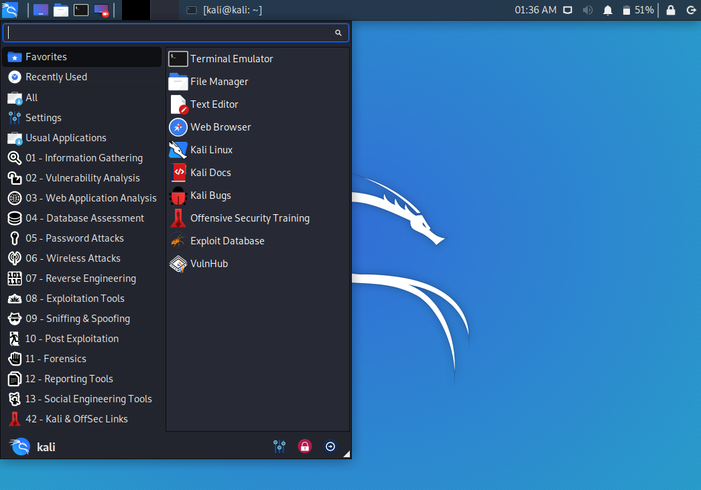

The first step to using Kali Linux is creating a space that you can run the operating system in. One of the best ways to do this is through a virtual machine.
A virtual machine is a computer inside of a computer.[1] Basically, you can download an operating system file from the internet and run it locally using a program. The reason this is an excellent way to run Kali is because the machine is isolated or "sandboxed" from the computer that's running it, meaning that anything that's done in the virtual machine won't alter the host computer.[2] This is also an excellent choice for beginners because it reduces the chance of corrupting your main computer's system. However, if you prefer to simply install it onto a computer (possibly as a dual boot) then you can navigate to Kali's website and follow the instructions listed there.
Installing VirtualBox
First, we'll need to install a program called VirtualBox that will act as our virtual machine host. Navigate to the VirtualBox website downloads page and click on the appropriate version of the program for your current operating system. I'm running on a Mac, so I'll choose the "OS X hosts" option in the list.
Download the file. Once it's downloaded, go ahead and open the file and install it onto your computer in the location you want to store the program and all of its files into.
Downloading Kali Linux
While that's downloading, you'll want to navigate to the Kali Linux virtual images page. This page hosts several images or files that contain the operating system which will be read by VirtualBox. The file you will need to download is the one circled in the image below.
Once both VirtualBox and your Kali Linux image are downloaded, you should check the hash listed on the Kali Linux website to check the validity of the image you have downloaded. This makes sure the file hasn't been altered or tampered with, and a great guide on how to do this can be found here.
For example, the hash value of my image looks like this:
6e138bf85636f5fd14061e5e425695dd90882190562ceb8fc4dbb277e5e4f5a2
Once you've checked your hash values, you'll need to install VirtualBox onto your computer. This is what it should look like once you've finished:
If it doesn't look exactly like this, that's okay. However, it should look similar. You'll also want to unzip your Kali Linux file once it's finished downloading before going further. Don't worry if this step takes a while.
The next step is to click the Import button in the navigation bar. This is where you'll need to navigate to the location that you saved your Kali Linux file in. The file extension should be in .ova format.
When you add the file to VirtualBox, click Import at the bottom. You don't need to change anything on the next page. Click continue and wait a little while for VirtualBox to load the configuration settings and create a virtual machine.
You should now have a window that looks like the image below. If you don't, repeat the steps listed above.
Launching Kali Linux
Click on the button that says Start. If you get an error like the image below, navigate to Settings > Ports > USB 1.1 and click OK.
Allow the virtual machine to boot up. It should only take a few seconds. Once you reach the login screen, you can use the credentials kali/kali to log in. This is the default login and you may choose to change these credentials if you would prefer more security.
Here's the first look at your Desktop. If you see this, congratulations! You've successfully installed Kali Linux!
Navigating Kali Linux
One of the first things you should do is familiarize yourself with the Kali Linux desktop environment. Kali is a UN*X operating system, and if you've used another Linux operating system or even OS X, you're probably going to find some similarities in Kali.
One of the most important applications on Kali Linux is the Terminal. If you've never used or even seen a Terminal before, that's okay! They're easy to use and tend to be quicker than using a GUI (Graphical User Interface). The difference between a GUI and the Terminal is that there are no buttons to click--you simply type out commands and run them all in one spot. You can find the Terminal in the top taskbar.
Next, navigate to the icon on the top left corner. This is where you can access all of your tools easily.
Kali has so many tools available, it would be impossible to list all of them and what they do here. A good place to explore would be Kali's Official Documentation page. Here, it's easy to click each link and read about what the program is and what it's used for.
The applications available are seperated into 13 categories, each with a different purpose: Information Gathering, Vulnerability Analysis, Web Application Analysis, Database Assessment, Password Attacks, Wireless Attacks, Reverse Engineering, Exploitation Tools, Sniffing and Spoofing, Post Exploitation, Forensics, Reporting Tools, and Social Engineering Tools. Many of these are self-explanitory, but I'll explain what some of the less obvious categories are.
NOTE: Remember that hacking is illegal without consent. Always make sure to obtain full consent of a person or group of people who own the system or systems you wish to test on. If you'd like to test on your own system, I recommend creating another virtual machine--you can run two or more at once on any computer, or you can purchase a cheap computer to run on your network and test that way. Do be sure that you're okay with potentially destroying or corrupting that machine when starting out (this is why I recommend using a virtual machine as these can be replaced easily).
Information Gathering ↗
This one's pretty self-explanatory. This set of tools allows the user to gain knowledge about a system or set of systems, website, or other data point in order to test it.
Vulnerability Analysis ↗
This toolset is geared toward assessing and mitigating vulnerabilities in a system. There are three main classes of vulnerabilities: design vulnerabilities, implementation vulnerabilities, and operational vulnerabilities.
Wireless Attacks ↗
Kind of explanitory, these tools can be used to launch or help to assist wireless attacks against a target system.
Website Penetration ↗
This is a great place to start if a user wishes to become a Bug Bounty Hunter. These tools can be used to collect information on a website and to find vulnerabilities.
Exploitation Tools ↗
This set of tools allows the Kali Linux user to attack systems and exploit passwords, for example. This is really where Kali shines.
Forensics Tools ↗
The forensics tools installed on Kali Linux allow the user to delve into information they have garnered from a target.
Social Engineering ↗
Social engineering is the psychological manipulation of a person or multiple people into performing a task or tasks. Utilizing this toolset will allow the Kali Linux user to gain information that they otherwise would not be able to gain (such as confidential information).
Stressing Tools ↗
This set of tools is used for testing a system or group of systems' stability. It pushes to boundaries of a system's capacity for handling traffic, for example. It can also be used for testing the availability of a system.
Sniffing & Spoofing ↗
Sniffing is finding services that can be exploited. Spoofing is used to disguise an IP address so that network traffic is re-routed. Together, they can be used to cause a man-in-the-middle attack, for example. These are great to learn so that they can be prevented.
Password Cracking ↗
Pretty straight-forward. These tools are used for breaking into systems with cracked passwords.
Maintaining Access ↗
Also straightforward. These tools allow a user to maintain access to a hacked system.
Reverse Engineering ↗
Using these tools a user can take a program and reverse it, allowing the user to see what's inside.
Reporting Tools ↗
A report can be generated after a series of tests have been performed. These are useful for law enforcement or a systematic approach where a user has been hired to perform testing and is required to submit results.
Now that you're familiar with what these tools are made for, go ahead and follow the tutorials that are listed by each category head (click the blue arrow). Good luck and have fun!
REFERENCES
- ^ Microsoft. What is a virtual machine?